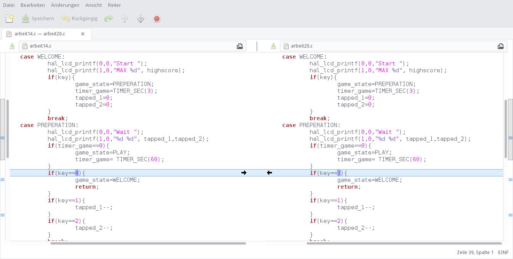
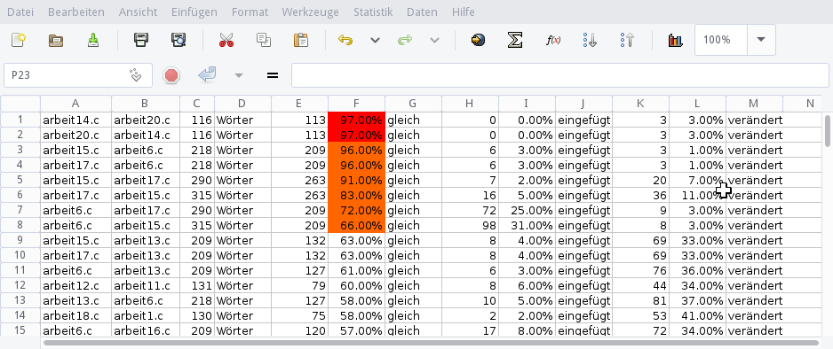

Semiversus | Interessante Korrelation, oder anders: Abgeschrieben? | URL: http://www.semiversus.com/blog/korrelation.html
Interessante Korrelation, oder anders: Abgeschrieben?
Das Problem
Jede Lehrperson hat ihre eigene Meinung zum Abschreiben. Für mich ist es etwas, das mit Gerechtigkeit
bei der Beurteilung zu tun hat. Schließlich soll ja die Leistung betreffend der Aufgabenstellung beurteilt
werden und nicht die soziale Kompetenz im Umgang mit anderen.
Abschreiben als solches zu erkennen ist keine einfache Sache, da der Aufwand massiv mit der Anzahl der zu vergleichenden
Arbeiten steigt. Bei 5 Arbeiten sind insgesamt 10 Vergleiche zu machen: Die erste Aufgabe wird mit den vier anderen
verglichen, dann die zweite Arbeit mit den drei verbleibenden, usw.
Die Anzahl der Vergleiche ergibt sich dabei mittels den Binomialkoeffizienten zu:
%%N_{Vergleiche}={N_{Arbeiten} \choose 2}=\frac{N_{Arbeiten}!}{(N_{Arbeiten}-2)!\cdot 2!}%%
| Anzahl der Arbeiten |
Anzahl der Vergleiche |
| 5 |
10 |
| 10 |
45 |
| 15 |
105 |
| 20 |
190 |
| 25 |
300 |
| 30 |
435 |
In der Informatik spricht man auch von einer Laufzeitkomplexität von %%\mathcal O(n^2)%%, sprich mit doppelter Anzahl
an Arbeiten steigt die Anzahl der Vergleiche um (etwas mehr als) das Vierfache.
Bei einer Hausaufgabe habe ich nun das konkrete "Problem" 25 Arbeiten miteinander zu vergleichen. Es handelt sich
um eine Programmieraufgabe in C.
Jede Lösung wird als ZIP-Datei abgegeben. Diese entpacke ich in einen Folder
In jedem Verzeichnisbaum steckt eine Datei, die bereits in der Aufgabe definiert wurde und zur Bearbeitung entsprechend
ausprogrammiert werden musste: game.c.
Der Vergleich von zwei Textdateien lässt sich mittels diff bewerkstelligen. Was ich aber brauche ist eine Statistik,
die mir angibt, wie groß die Korrelation zwischen zwei Dateien ist, sprich wie groß der Anteil an Hemeinsamkeiten ist.
Bei dem Vergleich sollten Zeilenumbrüche, Leerzeichen, usw. keine Rolle spielen. Das Tool der Wahl ist wdiff. Die Option
-s liefert eine entsprechende Statistik.
$> wdiff -s arbeit1.c arbeit2.c
...
arbeit1.c: 126 Wörter 48 38% gleich 13 10% gelöscht 65 52% verändert
arbeit2.c: 140 Wörter 48 34% gleich 7 5% eingefügt 85 61% verändert
Der Vergleich von arbeit1.c mit arbeit2.c liefert ein anderes Ergebnis als der umgekehrte Vergleich und
hängt vorallem mit der unterschiedlichen Anzahl an Gesamtworten zusammen.
Zum Vergleich von 25 Arbeiten müssen nun 300 dieser Aufrufe gemacht werden. Dazu dient folgendes bash-Skript:
files=`ls *.c`
for work1 in $files;
do
for work2 in $files;
do
if [ $work1 == $work2 ]; then
continue
fi
echo -n $work1 $work2
wdiff -s $work1 $work2|tail -n 1|cut -d: -f2
done
done
Auswertung
Die Ausführung führt dann zu folgendem Ergebnis (ein Ausschnitt):
...
arbeit20.c arbeit13.c 209 Wörter 47 22% gleich 12 6% eingefügt 150 72% verändert
arbeit20.c arbeit14.c 116 Wörter 113 97% gleich 0 0% eingefügt 3 3% verändert
arbeit20.c arbeit15.c 315 Wörter 54 17% gleich 11 3% eingefügt 250 79% verändert
arbeit20.c arbeit16.c 209 Wörter 39 19% gleich 0 0% eingefügt 170 81% verändert
arbeit20.c arbeit17.c 290 Wörter 54 19% gleich 13 4% eingefügt 223 77% verändert
...
Es fällt der zweite Eintrag auf: 97% Übereinstimmung. Da muss sehr viel Zufall im Spiel sein, oder auch nicht.
Ein direkter Vergleich mittels Meld zeigt:

Die Liste nach Korrelation sortiert zeigt folgendes Ergebnis:

Es zeigen sich zwei "Cluster": arbeit14.c und arbeit20.c unterscheiden sich durch genau drei "Wörter",
arbeit6.c, arbeit15.c und arbeit17.c unterscheiden sich auch nur durch ein paar "Wörter".
Folgen
Es fällt mir schwer zu sagen wie ich richtig handeln soll. Meine Lösung ist in diesem Fall eine Unterrichtsvereinbarung,
die ich mit der Klasse am Anfang des Schuljahres definiert habe und in der festgeschrieben ist, dass bei einem solchen Fall
0 Punkte auf alle Lösungen mit "zu großer Ähnlichkeit" gegeben wird. Ich habe gehofft, dass dies nie zur Anwendung kommt.